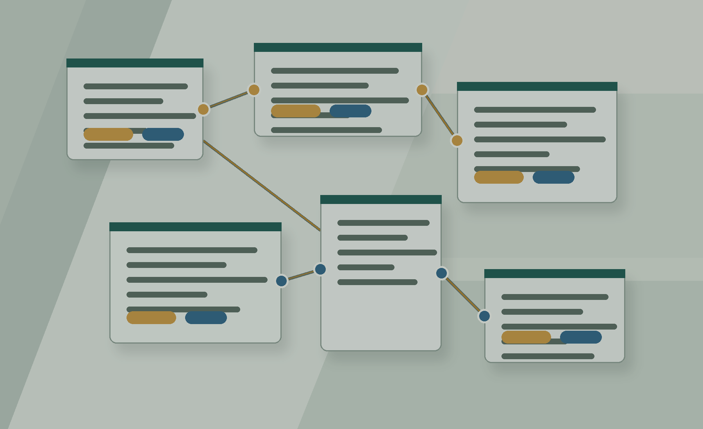

Activity guide and workshop links
Using AI Agents for Reproducible Research
Follow the workshop sequence, download the sample files, and copy the prompts you need for Codex.

This page is the practical activity guide for the workshop. It follows the slide sequence and gathers the links, folders, prompts, and checks participants need during the day.
Start here if you are in the room and need the shortest route through the activities.
Getting Started
Use these links first.
- Public handout page: dominiks-handouts.pages.dev/oa8c
- Repository: github.com/techczech/agents-for-reproducibility
- Download sample files: workshop-sample-files.zip
- Codex access check: bit.ly/ox-codex-access
- Participant setup checklist: participant/setup-checklist.md
Copy this if you are asking Codex to orient itself after opening a sample folder:
Inspect this folder before making changes. Tell me what files are here, what they appear to contain, what you should not edit, and what you recommend doing first.Activity 1: Getting Ready
Goal: confirm that everyone can open Codex, find the sample files, and work in a safe folder.
- Setup checklist: participant/setup-checklist.md
- Sample files overview: sample-files/README.md
- Zip download: workshop-sample-files.zip
- Open Codex.
- Download or extract the sample files.
- Use only fictional workshop material.
- Do not add real participant data, restricted research data, API keys, or private account information.
Activity 2: How Agents Work
Goal: understand the difference between a chatbot and an agent before asking Codex to work on files.
- A chatbot mostly responds to prompts and uploaded context.
- An agent can work in a loop with tools, files, commands, permissions, and feedback.
- Codex works in a local folder and can inspect or change files inside its sandbox.
- The chat is not the archive. Save sources, notes, instructions, scripts, outputs, and decisions into files.
What did the model infer, what did it actually inspect, and what did the computer do?Activity 3: First Agent Task
Goal: use Codex to inspect a messy folder without immediately changing it.
Detailed handout: participant/first-agent-task-messy-folder.md
Inspect this folder and tell me what is in it. Group the files into likely categories, flag duplicates or confusing names, and suggest a safer folder structure. Do not move, rename, or edit files yet.- Did Codex read files before making claims?
- Did it separate evidence from guesses?
- Did it propose changes before making them?
- Which permissions did you approve?
Activity 4: Debrief Permissions
Goal: review what happened in the first task and connect it to reproducible work.
What did you inspect, what did you infer, and what would you change only after human approval?- Which folder did Codex have access to?
- What did it do well?
- What did it assume?
- What should a researcher check before accepting its plan?
- What would have been risky in a real research folder?
Activity 5: Project Instructions With AGENTS.md
Goal: see how project instructions change what the agent does.
Detailed handout: participant/project-management-agents-exploration.md
AGENTS.mdCLAUDE.md_TASK-LOG/_CHANGELOG/_AGENT-INSTRUCTIONS/source-material/outputs/notes/
Read the project instructions and source material in this folder. Create an HTML project-status report in outputs/ that explains the current change request, the available evidence, the main risks, the missing information, and the recommended next decision. Do not invent facts that are not in the source material.Which project instructions affected your work?Activity 6: From AGENTS.md To SKILL.md
Goal: distinguish project instructions from reusable skills.
- AGENTS.md site: agents.md
- Agent Skills overview: AgentSkills.io
- Agent Skills exercise: exercises/agent-skills/README.md
- Public skill examples: anthropics/skills
- Public skill examples: mattpocock/skills
- Dominik's public skills catalogue: techczech/dominiks-agent-skills
Suggest one small Agent Skill that would help with a repeated research task in this folder. The skill should be narrow, source-grounded, and useful across more than one project. Do not create files yet; first explain the trigger and the workflow.Activity 7: Git And GitHub
Goal: use Git as a visible project-history layer. GitHub is optional.
Detailed handout: participant/git-github-exercise.md
Initialise Git in this sample project, show me the current status, make a first commit, and explain what has been saved. Before committing, show me what files will be included.git init
git status --short
git diff --check
git add .
git commit -m "Initial project record"
git log --oneline -3Check whether GitHub CLI is available and authenticated. If it is, create a private GitHub repository for this workshop project and push the first commit. If it is not, explain the local-only fallback.Activity 8: Working With Data
Goal: set up a small reproducible analysis with source data, instructions, code, outputs, and assumptions.
- Data folder README: sample-files/research-data-for-replication/README.md
- Reproducible analysis exercise: exercises/reproducible-analysis/README.md
Inspect these CSV files, create a short data inventory, identify key variables and missing values, and propose one simple analysis that can be reproduced from the raw files. Save any code, outputs, and assumptions in separate files.- Are inputs preserved?
- Is there a script?
- Are outputs saved separately?
- Are assumptions and uncertainties recorded?
- Can another person inspect what happened?
Activity 9: Cloudflare Publishing
Goal: publish a reviewed static output, not raw source material.
Detailed handout: participant/cloudflare-publishing-exercise.md
Create a simple static documentation page from this sample project and save it in an output folder. Then explain which files would be published and which source files you used.Check whether Wrangler is available and whether Cloudflare authentication works. If it does, deploy the static output folder to a Cloudflare Pages test project. If it does not, keep the output local and record what would be needed.- raw source material by accident,
- real participant data,
- sensitive research data,
- API keys or account details.
Activity 10: Safety, Cost, And Next Steps
Goal: connect the day back to real research practice.
- What work is safe to do with fictional or public data?
- What would require ethics, data protection, or local policy review?
- What should stay local?
- What costs matter: money, time, attention, review effort, and risk?
- Which part of your own research workflow would benefit from agent support first?
Based on what we did today, help me identify one low-risk research workflow where an agent could help. Include what files I would prepare, what instructions I would write, what outputs I would save, and what a human would still need to review.Extended And Backup Activities
Use these if setup varies across the room or you want more practice.
- Extended sample-project route: exercises/sample-project/participant-tasks.md
- External services exercise: exercises/external-services/README.md
- Static website draft: exercises/website/README.md